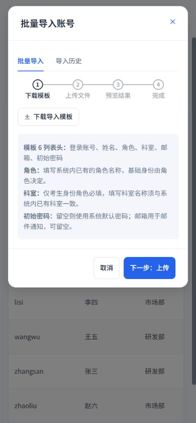
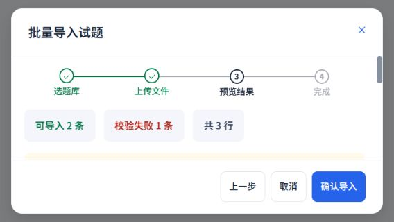

2026-10-19 · 管理端复杂任务与手机交互
账号导入、试题导入与成绩导出
继续使用白侧栏、浅灰蓝底、蓝色操作及16 px卡片。实际源组件与专用设计稿同步完善，保留原有字段、题型、角色、科室、内容去重及导出成绩口径。
本轮修正
- 两类导入共用完整文件名卡片，手机移除按钮至少44 px；移除文件后禁用解析，解析和写入期间锁定文件选择。
- 导入页签、去重开关及导出选项补齐44 px触控区；长提示自然换行，错误明细中的原始值与原因完整展示，宽表仅在弹窗正文内部滚动。
- 账号预览数量改为“可导入”，完成后才显示成功；保留上传校验、步骤切换、导入历史及失败恢复。
- 成绩导出增加完整考试上下文、格式及字段分组，全选支持部分选中；导出期间锁定格式、字段与关闭，失败保留选择。
- 账号解析与写入防重复请求，成绩导出仍保留Excel / PDF和13个字段，不改变后台授权及成绩处理逻辑。
设计目录新增对应的专用任务正文，导入稿可切换上传 / 预览；移动端采用独立任务弹窗、正文滚动及固定底部操作。
实际账号导入弹窗

390 × 844：实际用户管理打开导入、切换上传与历史后取消；未选择或提交业务文件。
长内容与多步骤样例
以下使用实际源组件及无业务数据的本地样例工作簿，解析与写入由内存样例替代，不连接业务接口。用于核对布局和交互，不代表真实Excel解析结果。

568 × 320横屏：正文独立滚动，上一步、取消和确认操作保持可见。
验证结果
93项相关回归和全局样式检查通过；类型检查、生产构建通过。
实际账号导入弹窗在320 × 568、390 × 844、568 × 320、768 × 844、1440 × 960完成5次检查。另以相同五档尺寸检查成绩导出、账号长文件名、账号校验预览、长题库名称及试题校验预览，共25次隔离检查：正文无横向溢出、可用高度大于0，底部操作未超出视口。
测试覆盖文件移除、扩展名校验、上传期间锁定、预览与提交防重复请求、字段全选及清空、PDF参数、导出失败恢复、内容去重参数和原有批量授权流程。
本轮未运行全量测试；此前全量459项及后续21项复测的记录见上一轮验收。未实际创建账号、导入试题、导出业务成绩或更改权限。浏览器视口检查不等同于实体手机和软键盘测试。